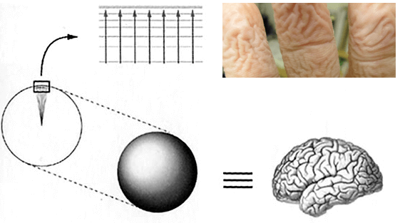
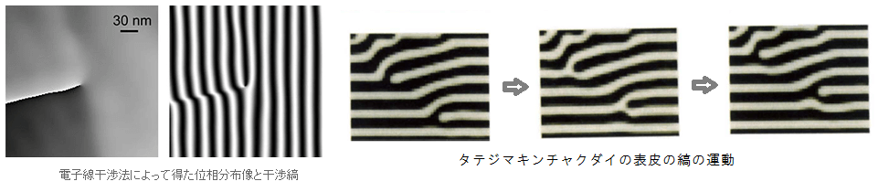
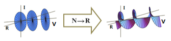
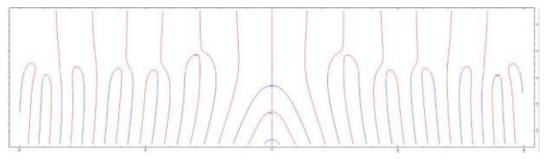

チューリングの波動関数
波動関数といえば，量子力学に登場する線形の方程式だ．理系の学部２年では井戸型のポテンシャルの解き方から習いはじめる．しかしその学部を卒業しても，波動関数が何を指しているのか，どのようなかたちを記述している式なのか，分からない人が大半らしい．いったい波動関数とは何だろうか．
ここで教科書の通説とは異なる人物に登場していただく．アラン・チューリングである．コンピューターが家庭に普及し，インターネットが生活の一部になった現代にとって，チューリングの３つの偉業は近代の４００年間のなかでも大きな偉業だ．「チューリングマシン」「チューリングテスト」そして「チューリングパターン」．しかし，この３つめの業績が量子力学に関する業績である，という指摘は専門の文献でもまだあまり見かけない．
チューリングパターンは，スーパーマーケットに行けば見ることができる．さばの切り身の皮目のところに，うねる模様がみえる．これはチューリングパターンである．また，川の水面の波面も，砂漠の風紋も，チューリングパターンである．風呂に長く浸かったあとふやけた指の模様は３次元のチューリングパターンである．気づいてみれば，髄液に浸かった脳のしわも，３次元チューリングパターンである．
チューリングパターンとしてみると，量子力学の初歩で学ぶ干渉縞もその仲間なのである．ハニカム構造をしているグラフェンを通して干渉縞を作ると，タテジマキンチャクダイの皮の模様のように縞が途中点で分岐したチューリングパターンが現れる．ここから，等方に広がる干渉縞は分岐させることができることがわかる．そのとき波のかたちは複素多様体になっている．
等方的な波を圧縮して多様体にするには，どうすればよいか．さばは皮膚で色素がぶつかり合えばよい．タテジマキンチャクダイも同様だろう．川は水面に風が吹きさえすればよい．砂漠も同様だろう．指は内側から塩分を抜き取ればよい．脳も同様だろう．このように，表面で入出力反応が起こるとき，チューリングパターンができあがる．油滴のついた料理鍋，微生物の培養，北極海のオーロラ．チューリングパターンをなすものはほんとうに多く見つかる．
この入出力は周期ともいえる．それこそ波動関数である．指数関数で表されていてもψと書かれても，波動関数とはつまりこのような波である．縞模様の分岐点では波動関数が収縮し，周期がゼロにつぶれている．多価関数の価数ｎを整数から実数に拡張すれば，いたるところでゼロにつぶれている多様体もできる．
波動関数，脳，生命．チューリングは計算の研究を通じて，数理科学のすべての問題を解いてしまったおそれがある．ところでガロアやリーマンにしても，すべてを解いてしまえるような脳の持ち主を，神は長く生かさないようだ．今年も静かに神を待ち望む．畏れ多い神を．